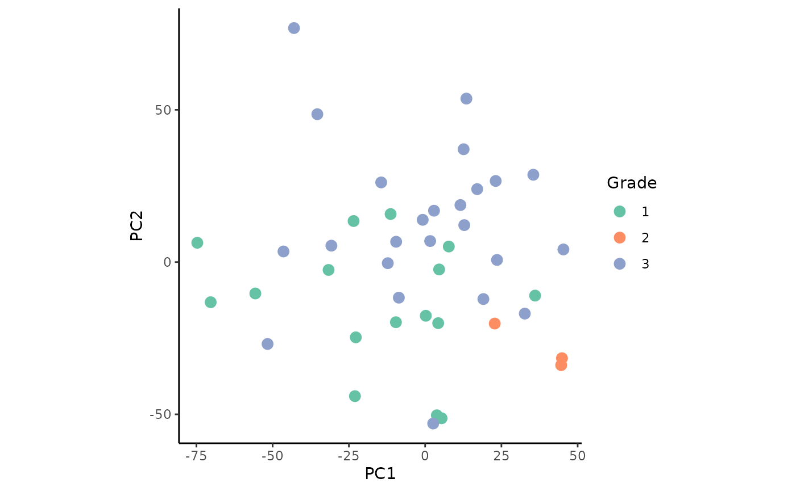
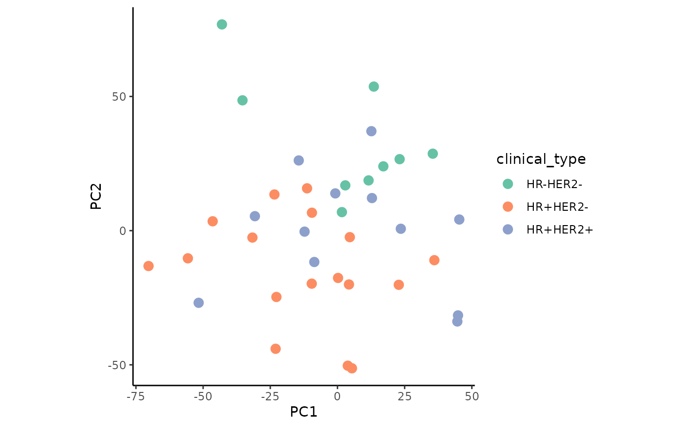
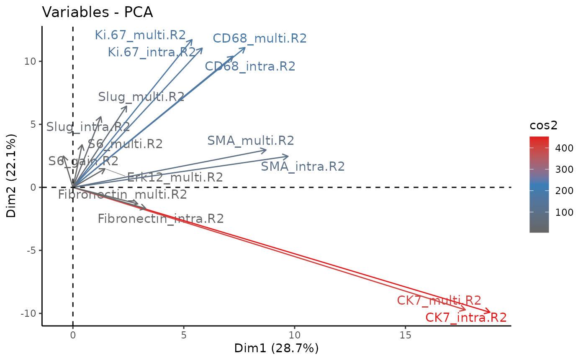
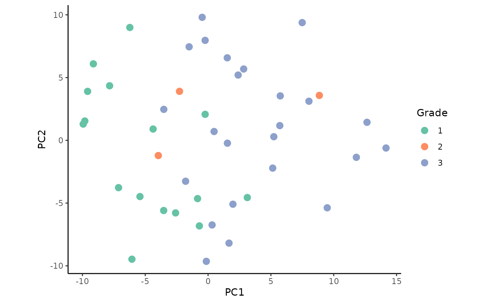
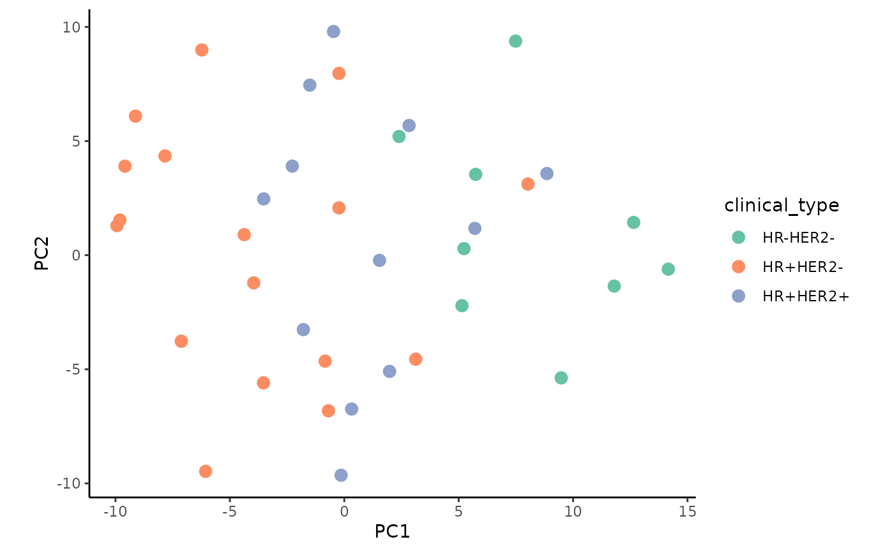
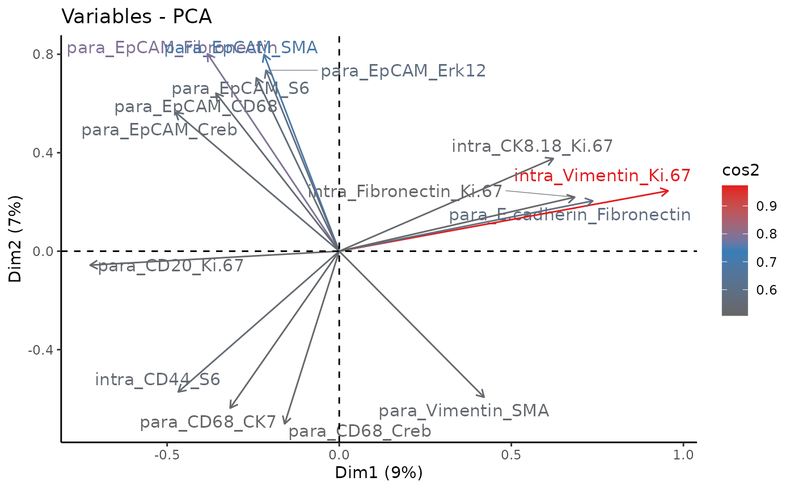

Signature analysis of IMC breast cancer data
Leoni Zimmermann
Heidelberg University, Heidelberg, GermanyJovan Tanevski
Heidelberg University and Heidelberg University Hospital, Heidelberg, GermanyJožef Stefan Institute, Ljubljana, Slovenia
jovan.tanevski@uni-heidelberg.de
2024-03-07
Source:vignettes/ReproduceSignaturePaper.Rmd
ReproduceSignaturePaper.RmdIntroduction
MISTy uses an explainable machine learning algorithm to analyze spatial omics data sets within and between spatial contexts, called views. Structural and functional data can be used to train the MISTy model for one or more samples. After training the model, in the result space, these samples are defined by a vector consisting of the sample signatures. There are three signatures: performance, contribution, and importance. For each marker, the signatures are a concatenation of the following values:
Performance signature: The variance explained by using the intraview alone, the variance explained by the multiview model, as well as the explained gain in variance for each marker.
Contribution signature: Fraction of contribution of each view for each marker.
Importance signature: The estimated and weighted importance for each predictor-target marker pair from all views.
Based on the signatures, we analyze what causes differences in performance metrics between the samples.
In this vignette, we will reproduce the signature analysis from the
original
publication. The data used was obtained from Imaging Mass Cytometry
(IMC) of 46 breast cancer samples. In total, 26 protein markers were
measured across three different tumor degrees. For the MISTy analysis,
three views were created: an intraview, a juxtaview, and a paraview. The
zone of indifference (ZOI) of the paraview was set to the threshold of
the juxtaview. This way, an overlap of both is avoided. The parameter
l was optimized for each marker and can be found here
in Fig. S8. For more information on the paraview parameters see
?add_paraview(). The MISTy model was then trained with the
standard parameters. We will now continue after the training of the
MISTy model. The collected results are available from the
imc_bc_optim_zoi.RDS file.
First load the necessary packages and load the data:
#MISTy
library(mistyR)
library(future)
#Data manipulation
library(tidyverse)
#Data analysis
library(factoextra)
plan(multisession, workers = 6)
#Data
download.file("https://www.dropbox.com/scl/fi/yolsq97ouc7ay8wvdibp6/imc_bc_optim_zoi.RDS?rlkey=txu88dec23mtw7tfy99e7ucb0&dl=1",
destfile = "imc_bc_optim_zoi.RDS",
method = "auto",
mode = "wb")
download.file("https://www.dropbox.com/scl/fi/h19svd580yxmue5x2c3he/bc_metadata.tsv?rlkey=j08v6ivjqz5uwn8ldjjbs4f5j&dl=1",
destfile = "bc_metadata.tsv",
method = "auto",
mode = "wb")
bc_results <- readRDS("imc_bc_optim_zoi.RDS")
meta <- read_delim("bc_metadata.tsv", delim = "\t")Performance signature
Extract signatures
Now we can extract the signatures from the loaded results. We will
first look at the R2 signature. Furthermore, we remove
markers that have an R2 gain of less than 2% by setting
trim = 2.
per_signature <- extract_signature(bc_results,
type = "performance",
trim = 2,
trim.measure = "gain.R2")Perform PCA
The goal here is to find out which factors are responsible for differences in R2. For this, we perform a PCA with the signatures:
To identify the groups that drive the differences in R2, we join the metadata to the PCA results.
Plot results
With the combined data, we plot the PCA colored by the factors grade and clinical sub-type.
#Grade
ggplot(permeta_pca %>% filter(!is.na(Grade)), aes(x = PC1, y = PC2)) +
geom_point(aes(color = Grade), size = 3) +
coord_fixed() +
scale_color_brewer(palette = "Set2") +
theme_classic()
#Sub-type
ggplot(permeta_pca %>%filter(!is.na(Grade), HER2 != "?"),
aes(x = PC1, y = PC2)) +
geom_point(aes(color = clinical_type), size = 3) +
coord_fixed() +
scale_color_brewer(palette = "Set2") +
theme_classic()
The plots show slight, but not clearly defined groupings according to the two factors.
Next, we investigate the importance of the R2 signature components of the protein markers for the PCA.
fviz_pca_var(persig_pca,
col.var = "cos2",
repel = TRUE,
select.var = list(cos2 = 15),
gradient.cols = c("#666666", "#377EB8", "#E41A1C")) +
theme_classic()
The first two principal components cover 50.8% of the variance of the samples. We observe that the gain in variance of the protein markers CD68, ki67, and SMA (smooth muscle actin) is the highest. These proteins associate with the processes of promoting phagocytosis, cell proliferation, and vascularization, respectively. This suggests that changes in these processes may drive the differences between tumor grades and clinical sub-types.
Importance signature
Extract signatures
We will repeat the same approach now with the importance signatures. First, extract them:
imp_signature <- extract_signature(bc_results,
type = "importance",
trim = 2,
trim.measure = "gain.R2")Again, we removed markers that exhibit less than 2% of gain in R2.
Plot results
Plot the PCA colored by the factors grade and clinical sub-type:
#Grade
ggplot(impmeta_pca %>% filter(!is.na(Grade)), aes(x = PC1, y = PC2)) +
geom_point(aes(color = Grade), size = 3) +
coord_fixed() +
scale_color_brewer(palette = "Set2") +
theme_classic()
#Sub-type
ggplot(impmeta_pca %>% filter(!is.na(Grade), HER2 != "?") %>%
mutate(clinical_type = paste0(ifelse(ER=="+" | PR=="+", "HR+", "HR-"),"HER2",HER2)),
aes(x = PC1, y = PC2)) +
geom_point(aes(color = clinical_type), size = 3) +
coord_fixed() +
scale_color_brewer(palette = "Set2") +
theme_classic()
We observe a weak clustering when colored by the tumor grade.
Lastly, we take a look at the importance of the signature components
from the PCA. In this case, they are the importance of the interaction
of protein markers predictor-target pairs for each view. Thus the
variable naming follows the pattern
view_predictor_target.
fviz_pca_var(impsig_pca,
col.var = "cos2",
select.var = list(cos2 = 15),
gradient.cols = c("#666666", "#377EB8", "#E41A1C"),
repel = TRUE) +
theme_classic()
This time, the first two principal components cover only 16% of the variance of the samples. This can be explained by the richer information used for the PCA. We notice that most of the driving interactions are from the paraview, reminding us of the significant role of spatial context.
Session Info
Here is the output of sessionInfo() at the point when
this document was compiled.
## R version 4.3.3 (2024-02-29)
## Platform: x86_64-pc-linux-gnu (64-bit)
## Running under: Ubuntu 22.04.4 LTS
##
## Matrix products: default
## BLAS: /usr/lib/x86_64-linux-gnu/openblas-pthread/libblas.so.3
## LAPACK: /usr/lib/x86_64-linux-gnu/openblas-pthread/libopenblasp-r0.3.20.so; LAPACK version 3.10.0
##
## locale:
## [1] LC_CTYPE=C.UTF-8 LC_NUMERIC=C LC_TIME=C.UTF-8
## [4] LC_COLLATE=C.UTF-8 LC_MONETARY=C.UTF-8 LC_MESSAGES=C.UTF-8
## [7] LC_PAPER=C.UTF-8 LC_NAME=C LC_ADDRESS=C
## [10] LC_TELEPHONE=C LC_MEASUREMENT=C.UTF-8 LC_IDENTIFICATION=C
##
## time zone: UTC
## tzcode source: system (glibc)
##
## attached base packages:
## [1] stats graphics grDevices utils datasets methods base
##
## other attached packages:
## [1] factoextra_1.0.7 lubridate_1.9.3 forcats_1.0.0 stringr_1.5.1
## [5] dplyr_1.1.4 purrr_1.0.2 readr_2.1.5 tidyr_1.3.1
## [9] tibble_3.2.1 ggplot2_3.5.0 tidyverse_2.0.0 future_1.33.1
## [13] mistyR_1.10.0 BiocStyle_2.30.0
##
## loaded via a namespace (and not attached):
## [1] gtable_0.3.4 xfun_0.42 bslib_0.6.1
## [4] rstatix_0.7.2 ggrepel_0.9.5 tzdb_0.4.0
## [7] vctrs_0.6.5 tools_4.3.3 generics_0.1.3
## [10] parallel_4.3.3 fansi_1.0.6 highr_0.10
## [13] pkgconfig_2.0.3 RColorBrewer_1.1-3 desc_1.4.3
## [16] assertthat_0.2.1 lifecycle_1.0.4 farver_2.1.1
## [19] compiler_4.3.3 textshaping_0.3.7 munsell_0.5.0
## [22] codetools_0.2-19 carData_3.0-5 htmltools_0.5.7
## [25] sass_0.4.8 yaml_2.3.8 car_3.1-2
## [28] ggpubr_0.6.0 pillar_1.9.0 pkgdown_2.0.7
## [31] crayon_1.5.2 jquerylib_0.1.4 cachem_1.0.8
## [34] abind_1.4-5 parallelly_1.37.1 tidyselect_1.2.0
## [37] digest_0.6.34 stringi_1.8.3 bookdown_0.38
## [40] listenv_0.9.1 labeling_0.4.3 fastmap_1.1.1
## [43] grid_4.3.3 colorspace_2.1-0 cli_3.6.2
## [46] magrittr_2.0.3 utf8_1.2.4 broom_1.0.5
## [49] withr_3.0.0 backports_1.4.1 scales_1.3.0
## [52] bit64_4.0.5 timechange_0.3.0 rmarkdown_2.26
## [55] globals_0.16.2 bit_4.0.5 ggsignif_0.6.4
## [58] ragg_1.2.7 hms_1.1.3 memoise_2.0.1
## [61] evaluate_0.23 knitr_1.45 rlang_1.1.3
## [64] Rcpp_1.0.12 glue_1.7.0 BiocManager_1.30.22
## [67] vroom_1.6.5 jsonlite_1.8.8 R6_2.5.1
## [70] systemfonts_1.0.5 fs_1.6.3